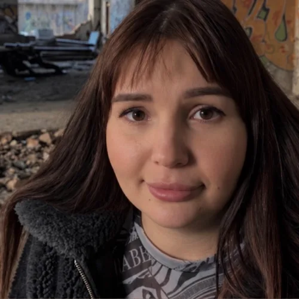
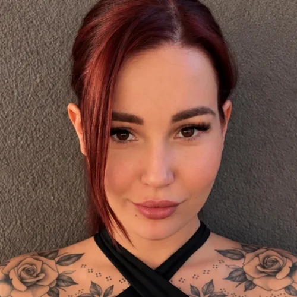
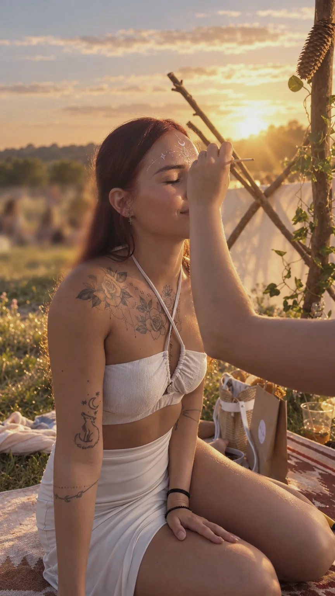
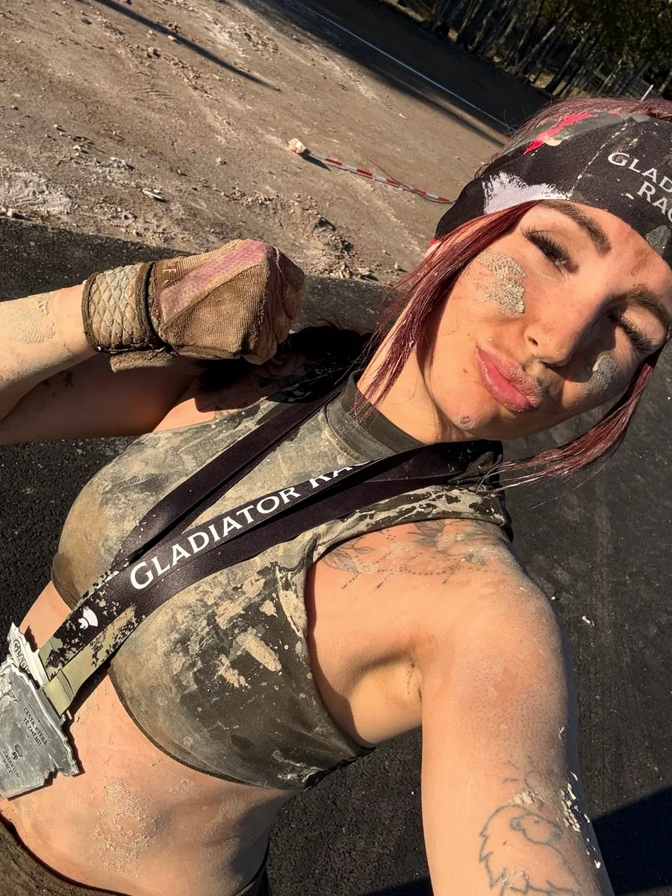

Od zotavení k přepsání vlastního příběhu
Pro lidi, kteří prošli duševním onemocněním, osobní krizí, vyhořením, traumatickými vztahy nebo pocitem hluboké stagnace – a potřebují na cestě zotavení podporu, sdílení a naději od někoho, kdo ji zná z vlastní zkušenosti.
Nejen pro duševní nemoci
Peer konzultace vychází z akreditované praxe a z osobního příběhu, který není z učebnice.
Proč nejen duševní nemoci? Protože můj příběh měl velká témata ještě předtím, než přišla nemoc. Proto rozumím dětství bez pocitu bezpečí, prázdné identitě a nulovému sebevědomí, emoční závislosti v téměř desetiletém násilném vztahu s narcistickým partnerem, úzkostem i panickým atakám. Hluboká práce s identitou a posouvání vlastních limitů skrze sport a osobní rozvoj byly mou letitou cestou k tomu, jak si konečně vytvořit život podle vlastních představ a mít zdravý vztah sama k sobě. Pochopila jsem, jaké kouzlo má, když člověk investuje energii tam, kde ji skutečně potřebuje.
Prognóza nebyla konečná
Po letech ale přišla větší zkouška. Covid a s ním roky psychotických epizod v rámci diagnostikované bipolární afektivní poruchy, neúspěšné léčby elektrokonvulzivní terapií a nakonec prognóza lékařů ve 25 letech: plná invalidita, bez výhledu na zotavení. Součástí té zkušenosti jsou i finanční, právní a existenční škody, které psychická nemoc v mezerách systému způsobuje – a o kterých se v péči mluví příliš málo.
Cesta zotavení nebyla dokonalá ani lineární, ale byla skutečná. Terapie mi dala prostor pro sdílení, ale já potřebovala vedení. A tak jsem opět skrze titraci diskomfortu, pevnou vůli, somatickou práci s tělem, práci se stigmatem a víru ve svou vnitřní hrdinku dokázala, že i přes negativní prognózu lékařů je zotavení možné.


Zotavení pro mě neznamená jen přežít. Znamená vrátit se k životu – k lidem, k tomu, co mě baví, i naplno ke sportu.


Každý příběh je ale jedinečný. Se svou zkušeností proto pracuji především jako s peerskou složkou podpory, lidskosti, sdílené zkušenosti a naděje – ne jako s přesným modelem zotavení.
Krok za krokem zpátky do vlastního života
Stabilizace
Pokud je to pro vás aktuální: dostat krizi pod kontrolu, vrátit se do funkčního života a znovu se cítit jako člověk.
Zotavení (recovery)
Klasický peerský přístup a jeho nástroje: peerská metodika, krizové plány, Semafor, práce se stigmatem a praktické vedení.
Témata zotavení
Práce s identitou, ztráta a přijetí, posílení důvěry ve vlastní hodnotu a hledání směru.
Cílem je návrat do vlastního života. A to je legitimní a plnohodnotný cíl.
Jaký smysl to všechno mělo?
Po zotavení jsem na sobě pracovala dál a prošla vnitřní transformací, které říkám integrace vnitřní hrdinky. Je to bod, kdy člověk už netvrdí jen „přežil jsem, zotavil jsem se, dávám si život dohromady“ – ale vidí smysl celé životní kapitoly s nemocí a krizí a čerpá z ní životní energii, psychickou odolnost, autenticitu a schopnost stát se díky ní lepší verzí sebe sama.
Stabilizace a zotavení jsou pevný základ. Koncept Panthera je pozvánka pro ty, kdo cítí, že se chtějí posunout ještě dál.
Vznikl z mé vlastní životní praxe – z přesvědčení a zkušenosti, že krize a nemoc mohou být katalyzátorem transformace, která by bez nich nevznikla. Peerská praxe umí pracovat s rolí pacienta na cestě zpět do života. Panthera pracuje s identitou hlouběji a v souladu s nejnovějšími výzkumy ji bere jako proměnnou, ne jako pevnou definici člověka.
Panthera se ptá na jedinou otázku: jaký smysl to všechno mělo? A tahle otázka je první kapitolou autentického příběhu integrované hrdinky.
Nový příběh
Proměna vyprávění o přežití ve vyprávění o vykoupení: „Tohle se mi stalo a udělalo to ze mě toho, kým jsem.“
Archetyp hrdinky
Vědomá práce s identitou a s archetypem hrdinky na vlastní cestě.
Stín jako zdroj
Integrace stínu ne jako břemene, ale jako zdroje síly.
Výsledkem je silnější identita, psychická odolnost a schopnost být opravdu sám sebou – v souladu s hodnotami, které jsou ve vás pravdivé. Naše osobnost nám možná nezaručí, že v životě nezažijeme další krize. Ale určuje, jak na ně budeme reagovat. A hlavně – jaký život si budeme aktivně tvořit.
Panthera je pozvánka, ne povinnost. Je pro ty, v nichž otázka po smyslu sama od sebe tiše rezonuje.
Ať hledáte cokoli, jsem tu
Pokud toužíte po lidském přijetí, podpoře, pochopení skrze vlastní zkušenost a možném nasměrování, jsem tu jako váš peer, který vás na cestě zotavení doprovodí.
A pokud už máte vlastní příběh zotavení z nemoci či životní krize a chcete se posunout dál, můžeme se společně podívat, co hodnotného se ve vás pod tím vším skrývá – právě díky těm velkým zkouškám.
Začínáme úvodní konzultací
Úvodní konzultace
90 minutPoznáme se, zmapujeme, kde jste a co potřebujete, a domluvíme se, jak dál.
Měsíční provázení
2 setkání měsíčně · 60 minut900 Kč za setkání. Pravidelná opora s prostorem mezi setkáními.
Intenzivní provázení
4 setkání měsíčně · 60 minut800 Kč za setkání. Každý týden, pro období, kdy potřebujete víc opory.
Všechna setkání probíhají živě online. Jednotlivé setkání mimo měsíční provázení: 1 000 Kč / 60 minut.
Peer mentoring nenahrazuje psychiatrickou ani psychoterapeutickou péči, je jejím doplňkem. V akutní krizi volejte 112 nebo Linku první psychické pomoci 116 123 (nonstop, zdarma).